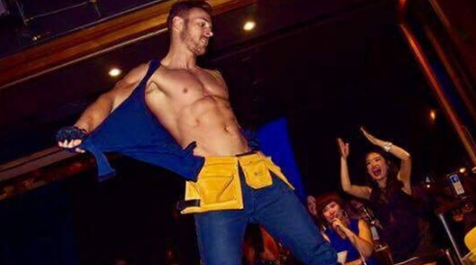
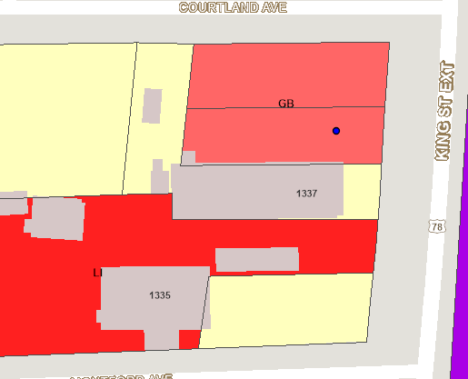
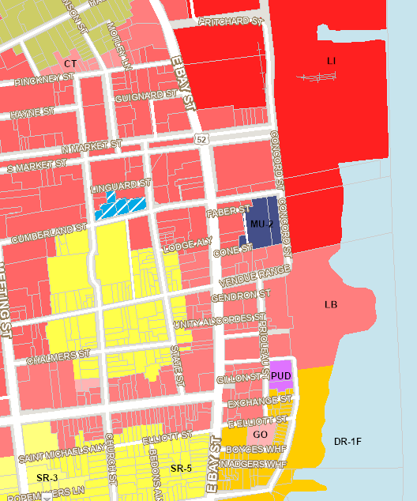

Charleston SC Has No Legal Male Strip Clubs or Weekly Male Revue Shows
Multiple addresses are being falsely advertised as male revue venues. Here is what is actually at each location, what Charleston's zoning laws say, and what bachelorette groups need to know before booking.
A touring male revue is not a weekly resident show
By definition, a touring production travels. It does not perform Thursday through Sunday at the same downtown bar, week after week, for the entire year. That is a resident operation — and resident adult entertainment venues require a specific city license and industrial zoning that no downtown Charleston bar holds.
Eventbrite currently lists multiple "male revues" in Charleston on any given weekend. Verify each listing independently: call the listed venue directly and ask whether they are hosting the event. In most cases, they are not aware they are listed at all.
Falsely Advertised Addresses: A Verified Fact Check
The following addresses are routinely cited by promoter websites, social media accounts, and third-party ticketing platforms as locations for male strip clubs or touring male revue shows in Charleston, SC. Each has been reviewed against public business records, city zoning designations, and direct contact with the venues.
-
NOT A VENUE
28 Ann Street, Charleston SCThis location is not a male strip club or touring male revue venue. The City of Charleston shut this address down for illegal activity. It does not operate as an adult entertainment establishment.
-
NOT A VENUE
73 Mary Street, Charleston SCThis address does not contain an entertainment facility of any kind suitable for male revue performances. Unless a show is being staged in a parking structure, this location cannot host such an event.
-
RESIDENTIAL
Garden Hill, Charleston SCGarden Hill is a residential neighborhood. No male strip club, touring male revue, or adult entertainment business operates here. There is no venue to book.
-
BAR / NO LICENSE
541 King Street — Sultans, Charleston SCSultans is a licensed downtown bar. It does not hold a special adult entertainment license, is not zoned for sexually oriented business operations, and does not host male strippers or male revue productions on any regular or weekly basis.
-
FEMALE CLUB
2028 Pittsburgh Street — Cheetah Charleston, Charleston SCCheetah Charleston is a female-oriented gentlemen's club. It does not host touring male revues or book male strippers Thursday through Sunday on a recurring basis. Its entertainment license covers its own performers and they do not employ males dancers.
Stop Selecting Entertainers from Online Galleries
Bachelorette groups in Charleston routinely spend hours browsing performer photo galleries, comparing packages, and selecting entertainers by appearance from booking websites. This effort is largely wasted, for two reasons.
First, a small number of independent male entertainers serve the entire Charleston market. The same performers work under multiple brand names simultaneously. Selecting a specific performer from a gallery does not guarantee that individual will appear at your event.
Second, the photos displayed on these sites are not taken in Charleston. They are sourced from national touring productions, agency stock libraries, or performers in other markets entirely. They are not representative of the local talent pool or the scale of event you will receive.
Live Event Photos from National Productions Are Not Local
Authentic large-scale male revue productions that tour nationally produce verifiable event photography: professional stage lighting, documented crowd sizes, branded production design. If a Charleston-based booking site cannot produce verified, local event photography from actual Charleston performances, that is a significant red flag.
The production-quality stage and crowd photos used by local booking sites are sourced from national touring shows — not from events that took place in Charleston, SC.

The Club Aura Precedent: When Illegal Shows Get Shut Down
Charleston's enforcement history includes the closure of Club Aura, a downtown establishment shut down for hosting illegal strip shows. The closure established a clear precedent: adult entertainment without proper licensing and zoning compliance will not be tolerated in Charleston's commercial districts, regardless of how the event is marketed or structured.
The Club Aura case is relevant because operators attempted to classify performances in ways that avoided the adult entertainment designation. City authorities did not accept that framing. The zoning designation of the location, not the marketing language used to describe the event, determined legality.
Charleston's Zoning Laws Prohibit Adult Entertainment Downtown
Charleston, SC maintains some of the most restrictive adult entertainment zoning regulations in South Carolina. Sexually Oriented Businesses (SOBs) are addressed specifically under Charleston County Zoning and Land Development Regulations, Section 6.4.18. The ordinance restricts where such businesses may legally operate.
- King Street commercial corridor
- East Bay Street entertainment district
- Ann Street nightlife zone
- Upper King Street bar district
- Market Street tourist corridor
- Light Industrial zones (M-1) only
- Upper Peninsula / Neck Area
- Warehouses, shipyards, manufacturing corridors
- Not applicable to any downtown bar or nightclub
Visual Proof: Where Is Adult Entertainment Legal in Charleston?
The following zoning designations were compared against addresses actively advertised as male revue venues.

Location: Upper Peninsula / Neck Area
This is the only zoning designation under which Sexually Oriented Businesses are permitted in Charleston. These areas consist of warehouses, industrial facilities, and shipyards — not bars, nightclubs, or downtown entertainment venues.

Zoning: Limited Business (LB) / General Business (GB)
This is Charleston's primary nightlife district, zoned for restaurants and retail. Proximity to churches, schools, and residential properties creates additional restrictions under the SOB ordinance.
Verdict: Illegal for strip shows or male revue productions of any kind.

Zoning: Limited Business (LB)
East Bay Street is zoned to protect Charleston's historic and tourism character. The Limited Business designation explicitly restricts adult entertainment.
If a ticket lists an East Bay Street address, the show is not taking place there legally.
Some venues attempt to classify shows as private events held behind curtains or in back rooms. Charleston's ordinances are explicit: adult entertainment is illegal in improperly zoned commercial establishments regardless of whether the event is marketed as private, invitation-only, or conducted out of public view. Zoning designation governs the activity, not the marketing language used to describe it.
Bars Hosting Weekly Shows Risk Losing Their Liquor Licenses
Any licensed bar or nightclub in Charleston that hosts adult entertainment shows without holding a proper adult business license is placing its South Carolina liquor license at direct risk.
- Immediate suspension of liquor license
- Permanent revocation of alcohol sales permits
- Substantial fines and penalties
- Criminal charges for owners and operators
- Forced closure of business operations
The Two-Drink Minimum Red Flag
Several operations advertising male revue shows include a "two-drink minimum" or alcohol package in their ticket pricing. This is a direct indicator of an illegal operation. Licensed bars in South Carolina cannot host adult entertainment without converting their entire business license and relocating to a properly zoned address. Selling alcohol at adult entertainment events requires specialized licensing that is not held by any downtown Charleston bar.
Online Ticket Sales Without an Adult Business License Violates State Law
Organizations selling weekly tickets to male revue shows through Eventbrite, social media, or their own websites — without holding a valid adult business nightclub license issued by the City of Charleston — are operating in violation of South Carolina law.
- Valid adult business license issued by the city
- Operation from a properly zoned address (M-1 industrial only)
- Compliance with all state adult entertainment regulations
- Public display of licensing at the venue
- Submission to regular inspections and regulatory oversight
Why the "Traveling Show" Exemption Does Not Apply
Some promoters argue their shows qualify as traveling entertainment — similar to a comedy show or concert — and are therefore exempt from adult business licensing requirements. This argument fails under South Carolina law. The nature of the performance, not the mobility of the performers, determines licensing obligations. A weekly show at the same downtown location, week after week, is not a touring production by any legal definition. Venues hosting adult entertainment must be licensed regardless of whether performers are local or traveling.
Why Enforcement Has Been Limited
Despite clear zoning and licensing violations, multiple operations continue to advertise and conduct weekly male entertainment shows in Charleston's commercial districts. The question bachelorette groups often ask is why these shows have not been shut down.
The absence of enforcement action does not indicate legality or city approval. Regulatory enforcement can change quickly when media attention increases, formal complaints are filed, liquor licenses come up for renewal, or competing businesses request ordinance enforcement. Venues and promoters operating in violation face the risk of immediate closure and loss of liquor licenses at any point.
Last-Minute Venue Changes Are a Red Flag
One of the most common tactics used by operators of illegal entertainment shows in Charleston is the last-minute venue change. Bachelorette groups who purchase tickets weeks in advance are increasingly receiving notifications that the event address has changed — often to a downtown location that cannot legally host the advertised show.
If a venue change directs your group to any of the following, request a full refund immediately:
- A hookah lounge or bar in downtown Charleston
- Any address on King Street, East Bay Street, or Ann Street
- Any commercial establishment in Charleston's tourist districts
- A location that has not been verified as holding an adult business license
The Hookah Lounge Switch
A documented pattern involves ticket holders being notified that their show has moved to a downtown hookah lounge or hookah bar. Hookah establishments in Charleston hold licenses for tobacco products and sometimes alcohol — not for adult entertainment. Downtown hookah lounges are in commercial zones explicitly prohibited from hosting such events. The venue risks its own business license, and the event can be shut down by police, leaving attendees without entertainment or refund.
Your Consumer Rights When a Venue Changes
A venue change to an improperly zoned location constitutes a material change to the terms of your purchase. You have grounds for a full refund under breach of contract, misrepresentation, and consumer fraud claims under South Carolina law.
Questions to Ask Before the Event
Deceptive Booking Websites and Brand Aliases
Bachelorette groups searching for male entertainment in Charleston will encounter numerous websites claiming to operate male strip clubs, weekly revues, or licensed adult entertainment venues. The majority of these sites are misleading. Common patterns include:
- Vague or missing address information. Legitimate licensed venues display their address prominently. Deceptive sites use "downtown Charleston" or list addresses that belong to unaffiliated businesses.
- No license information. Legal adult entertainment venues are required to display licensing publicly. Deceptive sites do not mention permits, licenses, or zoning compliance at all.
- Multiple brand aliases operated by the same individuals. The same operators create numerous websites under different names to dominate search engine results and create the impression that multiple legitimate venues exist.
- Addresses of legitimate bars listed without consent. Established downtown bars are listed as venue partners without their knowledge or permission. When contacted, those businesses have no record of the event.
- No physical storefront or visible signage. Licensed adult entertainment businesses have physical, identifiable locations. These operations do not.
- Pressure to pay deposits before venue details are provided. Legitimate venues provide complete information upfront. Operations that withhold the address until after payment are a clear warning sign.
Legal Entertainment Alternatives for Charleston Bachelorette Parties
Private Male Entertainment
Hire private entertainers for shows at legally permitted private residences, vacation rentals, or hotel suites. Ensure performers operate as licensed independent contractors.
Nightlife Bar Crawls
Explore Charleston's licensed bar scene with guided pub crawls visiting legal, properly permitted establishments on King Street, East Bay, and beyond.
Boat Parties & Harbor Cruises
Charter boats for private parties with entertainment. Waterway operations in Charleston harbor operate under separate federal maritime jurisdiction with proper permits.
Nearby Cities with Licensed Venues
Myrtle Beach (approximately 90 miles north) has licensed adult entertainment venues operating under proper zoning. Columbia, SC may also offer more permissive options.
Summary: What Charleston Bachelorette Groups Need to Know
- Charleston SC has no legal male strip clubs or licensed weekly male revue shows operating in commercial or tourist districts.
- Strict zoning laws prohibit sexually oriented businesses on King Street, East Bay Street, Ann Street, and all other downtown commercial corridors.
- Venues hosting such shows risk losing their South Carolina liquor licenses and face potential criminal charges.
- Organizations selling tickets without a valid adult business license are violating South Carolina law.
- Many advertised venues are falsely listed by promoter websites without the knowledge or consent of the businesses at those addresses.
- Absence of enforcement does not indicate legality. Enforcement can occur at any time and without warning.
Charleston's reputation as a premier bachelorette destination is built on its historic peninsula, world-class dining, harbor access, and vibrant licensed nightlife — not on unlicensed adult entertainment operations that create legal and financial risk for both venues and consumers.